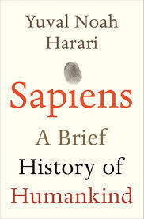
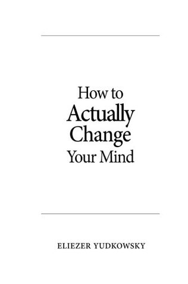
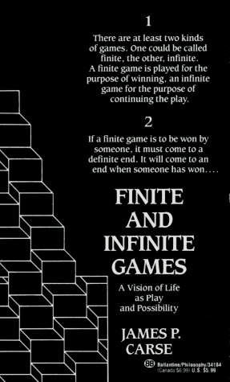
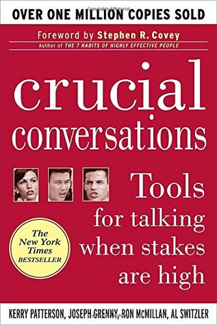
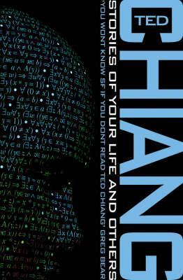

Sapiens: A Brief History of Humankind; Yuval N. Harari
A bird’s-eye view of the processes that shaped the development of our species. It highlights the pivotal moments that shaped our history and reminded me that humans are just one of many species on the planet. Seeing history from this perspective helps realise the impermanence of the current moment. The values we praise, the structures we take for granted, and what we (falsely) label as “what makes us human” are fluid and will inevitably change over time. We can, to an extent, shape the path these changes take. Which way do we want to go? Is the question the book leaves you with.

How to Actually Change Your Mind; Eliezer Yudkowsky
Challenges your understanding of what it means to be rational. In short: You might have thought you were, but probably aren’t.
There are biases that cloud our thinking. Some of them we can resist. Others we know about and find hard to resist or even notice! But the most dangerous are those that we don’t know about yet. This book might scare you! It will point out situations where you display biased thinking and bring to your awareness reasoning mistakes you didn’t yet know you made. You’ll read this and forget 60% of it. Keep re-reading throughout life (that’s also a note to self).

Finite and Infinite Games: A Vision of Life as Play and Possibility; James P. Carse
Helps to shake up your perspective of reality. It’s often said it’s valuable to maintain a childlike look at the world, one of surprise and wonder. This book gave me a new lens to look at the social dynamics, environment, and processes around me.
It’s very rare to find a text that helps see so many aspects of the world from a new angle. It didn’t just shake many of my previously held assumptions; it made me notice how many of my beliefs were just assumptions in the first place.

Crucial Conversations: Tools for Talking When Stakes Are High
Many (if not most? If not all?) conflicts result from faulty communication. From conflicts between individuals to conflicts between groups as large as nations. This book explains how misunderstandings arise and how to prevent them. It’s not a fluff-filled self-help position, but a down-to-earth, research-based manual for how to talk. The explanations are clear, methods logical, and the tools immediately applicable. If you use 15% of this in your life, even just understand the theory, your relationships with others will improve by much more than 15%.
Note: If I ever read the book about NVC, I imagine I’d list it here as an equally impactful alternative.

Stories of Your Life And Others; Ted Chiang
It was a deliberate choice to include one fiction book.
Short stories that are fun to read and function as philosophical and ethical thought experiments. Ethical dilemmas feel more than theoretical; they become tangible when set in scenarios humanity is already creating with technological advances.
It’s not a critique of technological progress, but rather highlights its inevitability. It can leave you feeling a sense of urgency and a desire to engage with many ethical questions before it's too late.
all images from Goodreads